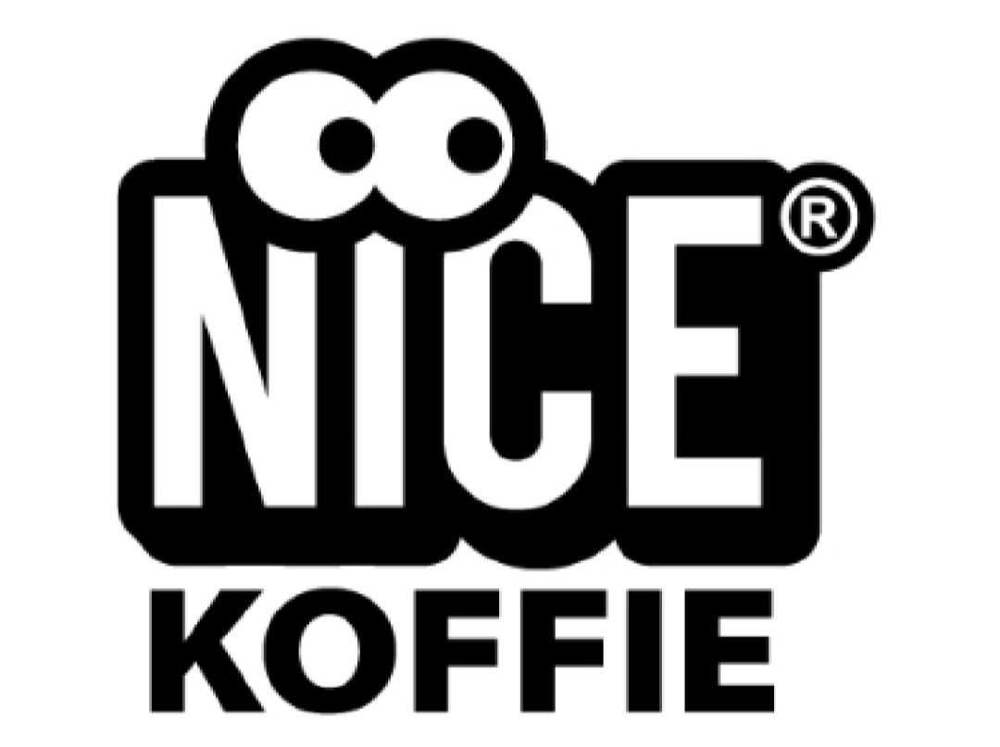
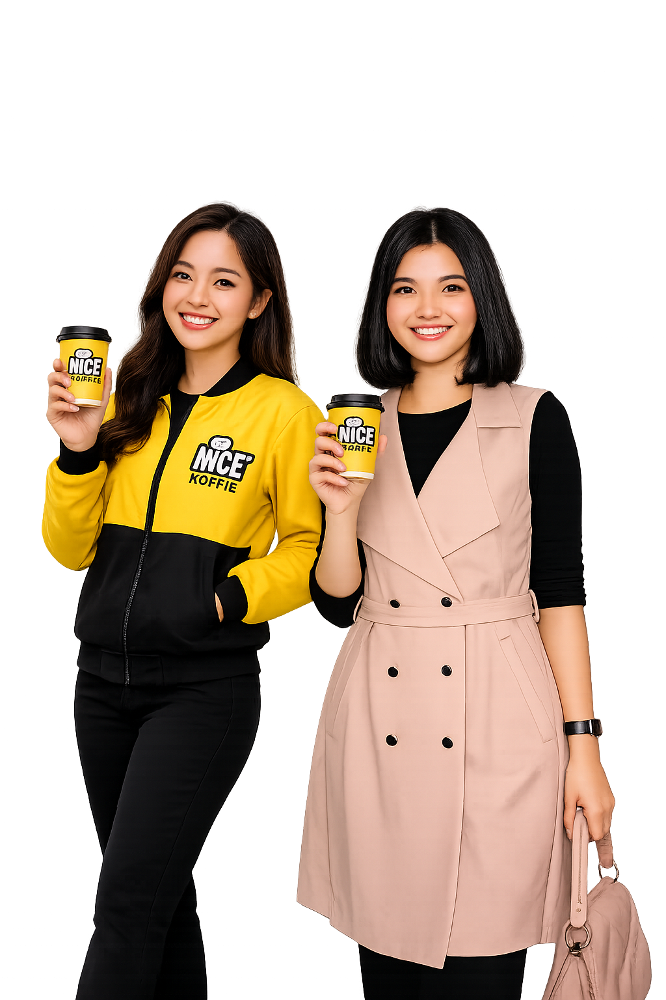

01. Penerimaan Bahan Baku
GUDANG / BARISTA KELILING
- Cek kuantitas dan kondisi fisik kemasan.
- Cek tanggal kedaluwarsa dan kesegaran.
- Tolak atau kembalikan bahan yang rusak/bocor.
Output: Form Penerimaan Barang (GRN)

Website operasional Nice Koffie untuk memastikan proses kerja konsisten, rapi, higienis, dan mudah dipantau — dari bahan baku sampai rekonsiliasi kas.

Identitas visual dan tim yang digunakan pada website operasional.
Visual proses dari awal sampai uang tercatat di keuangan.
Cek jumlah, kondisi kemasan dan tanggal kedaluwarsa.
Cek kendaraan, tools, es, air panas dan modal awal.
Racik sesuai resep dan terima Cash / QRIS.
Bersihkan peralatan, armada dan hitung stok.
Cocokkan uang fisik, QRIS dan total penjualan.
Keuangan memverifikasi dan mencatat setoran.
Checklist kerja untuk panduan harian tim Nice Koffie.
Gunakan dua checkpoint ini sebelum proses dilanjutkan.
YA — Sesuai standar.
Lanjut simpan ke inventaris / persiapkan barang dagangan.
TIDAK — Tidak sesuai.
Retur ke pemasok / gudang dan catat berita acara.
SEIMBANG.
Uang tunai + QRIS cocok dengan total porsi terjual. Lanjut penyetoran.
SELISIH.
Buat Catatan Selisih Kas (Kurang/Lebih) dan investigasi penyebab.
Pembagian fungsi kerja operasional Nice Koffie.
Penerimaan dan penyimpanan bahan baku serta pengecekan kuantitas, kemasan dan ED.
Persiapan, penjualan, pembayaran, closing, stock opname dan rekap kas harian.
Verifikasi kas, rekonsiliasi, penyetoran dan validasi bukti tanda terima.
Kerja rapi. Produk konsisten. Kas terkendali.